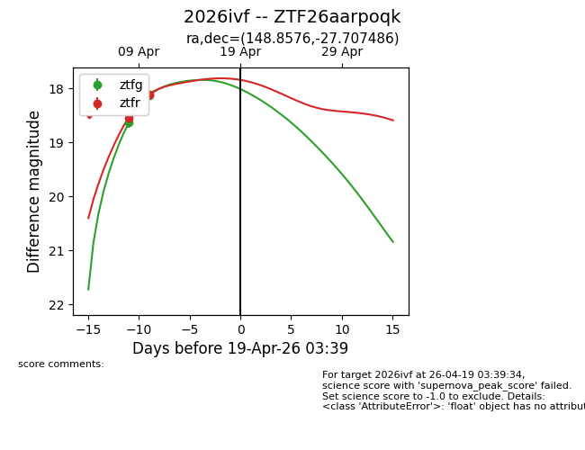
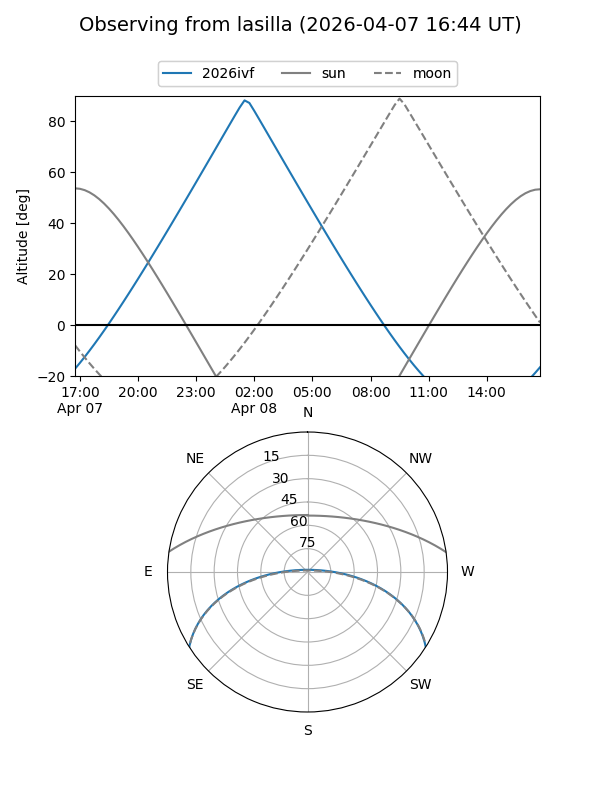
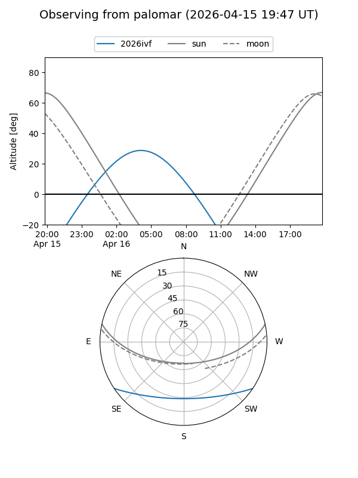
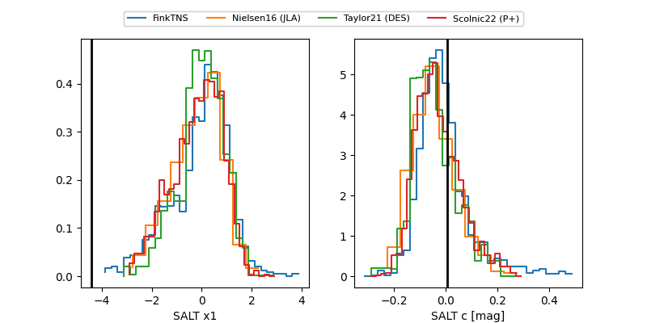

2026ivf
Target 2026ivf at 2026-04-19 03:44
Aliases and brokers:
FINK: link
Lasair: link
ALeRCE: link
TNS: link
YSE: link
alt names
ZTF26aarpoqk (ztf,fink_ztf)
2026ivf (tns,yse)
Coordinates:
equatorial (ra, dec) = 148.8576,-27.70749
equatorial (HMS+DMS) = 09:55:25.81,-27:42:26.95
galactic (l, b) = (261.7987,+20.77886)
Flags:
Photometry:
last ztfg=18.13, ztfr=18.11
2 ztfg, 2 ztfr detections
Lightcurve

Visibility


Additional plots
